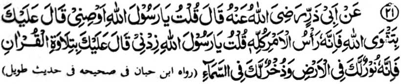
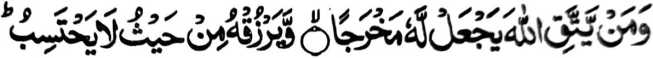
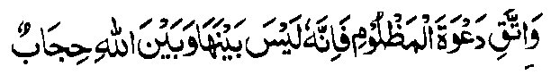
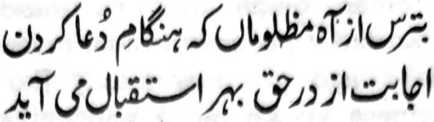

Miyakathitayan ko Abu Zar a pitharo iyan, “Pitharo aken a Ya Rasulollah (Sallallaho ‘Alaihi wa Sallam), osiyati ako ngka!” Pitharo iyan, “Padalema ngka ko ginawangka so kalek ko Allah ka mata-an a sekaniyan-i olo o langowan o mapiya a galebek.” Pitharo aken a Ya Rasulollah (Sallallaho ‘Alaihi wa Sallam), “Omani ngka raken!” Pitharo iyan, “Pembatiya-a ngka so Qur’an ka mata-an a sekaniyan na sindao ngka si-i sa donya go loto-o ka ko langit [Alongan a Maori].”
So kalek ko Allah na aya bekao o langon o mapiya a ‘amal. So tao a mipepeno ko poso iyan so kalek ko Allah, na di sekaniyan makapendosa ago di phakasagad sa maregen.

“...Na sa tao a ikalek iyan so Allah, na senggayan Niyan sa milidas iyan ko maregen, go mbegan Niyan sa pageper a di niyan mapipikir...” (Surah At-Talaq: 2-3)
Saba-ad ko miyanga-oona a manga Hadith na rininayag iran a so Qur’an na pephakabegay sa sindao. Si-i ko [kitab a] Sharh-ul-Ihya, na so Hadrat Abu Naim (Radhiallaho ‘Anho) na miya-aloy niyan a so Hadrat Basit (Radhiallaho ‘Anho) na piyanothol iyan pho-on ko Rasulollah (Sallallaho ‘Alaihi wa Sallam) a so manga walay a pembatiya-an non so Qur’an na pezigay ko manga ka-aden sa langit sa lagid o kasigay o manga bito-on ko manga ka-aden ko lopa.
Giyangka-iya a Hadith, a inabat pho-on ko [kitab a] At-Targhib na baden sabagi ko matas a Hadith a miyapanothol a miyakapo-on ko Ibn-e-Habban go inosay sa masagogod o Mulla ‘Ali Qari (Rahmatullahi ‘Alaihi) ago [inosay o] Suyuti (Rahmatullahi ‘Alaihi) sa makampet. Minsan pen giyangkanan a miya-aloy ron kagiya na kiyasana-an den ko antap angka-iya kitab, ogaid na so kalangowan angka-iya a Hadith na aden pen a madakel a paliyogat ago mala-i gona a osayan, sa giyoto-i sabap, a giyangkanan a osayan na pagaloin ko oriyan na-i.
So Hadrat Abu Zar (Radhiallaho ‘Anho) na pitharo iyan a iniza-an niyan so Rasulollah (Sallallaho ‘Alaihi wa Sallam) pantag ko kadakel o kitab a initoron o Allah. Inisembag o Rasulollah (Sallallaho ‘Alaihi wa Sallam), “Magatos a maroni a kitab [sohof] ago pat a mala-a kitab:
So Hadrat Abu Zar (Radhiallaho ‘Anho) na ini-iza iyan o antona-ai madadalem ko maroni a kitab a initoron ko Hadrat Ibrahim (‘Alaihis Salam). Pitharo o Rasulollah (Sallallaho ‘Alaihi wa Sallam),
“Kapapadaleman sa manga pananaro-on, ibarat o ‘Hay sakatao a mabager ago takabor a datu! Kena ba Ko seka biyaloy a dato ka ba angka makapanimo sa tamok, ka [aya kiyabaloya reka a datu] anka maren so pangeni o kasasalimbotan sa di niyan Raken kira-ot a mibegay ngka on nggaga-an so kabenar iyan, sabap sa di Aken thapelisen so pangeni o tao a kiyasalimbotan apiya sekaniyan na kafir.’”
[Giyangka-iya a lokes tano a mizorat sangka-iya kitab na pitharo iyan a igira aden a biyaloy o Rasulollah (Sallallaho ‘Alaihi wa Sallam) Amir o di na Gobernador ko manga Sahabah niyan, na ped ko manga pando-an niyan non, na lalayon niyan non gi-i pagosa-in:

Kaleken ka so pangeni o kasasalimbotan ka mata-an a sekaniyan [a pangeni] na daden a let iyan ago so Allah a maito bo a rending.
Lagid o pananaro-on o sakatao a tag-a Persia:

Iktiyari ngka so kaginawa sa mala o manga tao a kasasalimbotan, ko masa a kapephamangeni ran ka a-alaon a tarima o Kadenan.
Giya pen angka-iya a manga roroni a kitab na inaloy ran pen a paliyogat ko tao a aden a ongangen niyan, so kabagi-a niyan ko masa niyan sa telo ba-ad, inonta bo o ba kada-i sa tanod:
Paliyogaton pen so katikay niyan ko masa niyan ago iphagawid iyan a akal so kaphagozor o betad iyan ago so kasiyapa niyan ko dila iyan ko da-a rarantek iyan ago da-a kipantag iyan a katharo. Sa tao a genggenen iyan so katharo iyan na so dila iyan na maito a mapetharo iyan a ilang a katharo.
Ped ro-o, na so manga tao a aden a ongangen niyan na aya bo a iphelalakao niyan na telo a sabap, giyoto so gi-i niyan kanggalebeka ko mapheloto iyan ko Alongan a Maori, so iphaningkawiyagen niyan, ago so piyakay o Agama a kambatalo.
So Hadrat Abu Zar (Radhiallaho ‘Anho) na ini-iza iyan peman o antona-ai madadalem ko maroni a kitab a initoron ko Hadrat Mosa (‘Alaihis Salam). Pitharo o Rasulollah (Sallallaho ‘Alaihi wa Sallam), “Kadadaleman sa manga thoma, ibarat o:
Oriyan noto na so Rasulollah (Sallallaho ‘Alaihi wa Sallam) na initephi iyan ko rareb o Abu Zar (Radhiallaho ‘Anho) so lima niyan a mazisingayo sa pitharo iyan:
“Hay Abu Zar! Da pen a ongangen a ba niyan kalawani so kambilanga tao, da a paratiyaya a ba niyan kalawani so kalidasi ko manga Haraam, ago da-a kaporo a bangsa a ba niyan kalawani so kapiya-i parangay.”
[Si-i ko kaphagaloya ko madadalem sangka-iya a matas a Hadith, na so antap ago so ma-ana niyan na aya mala a kiyabegan sa osayan, kena ba so ma-ana o pizatimanan a kalimah niyan.]